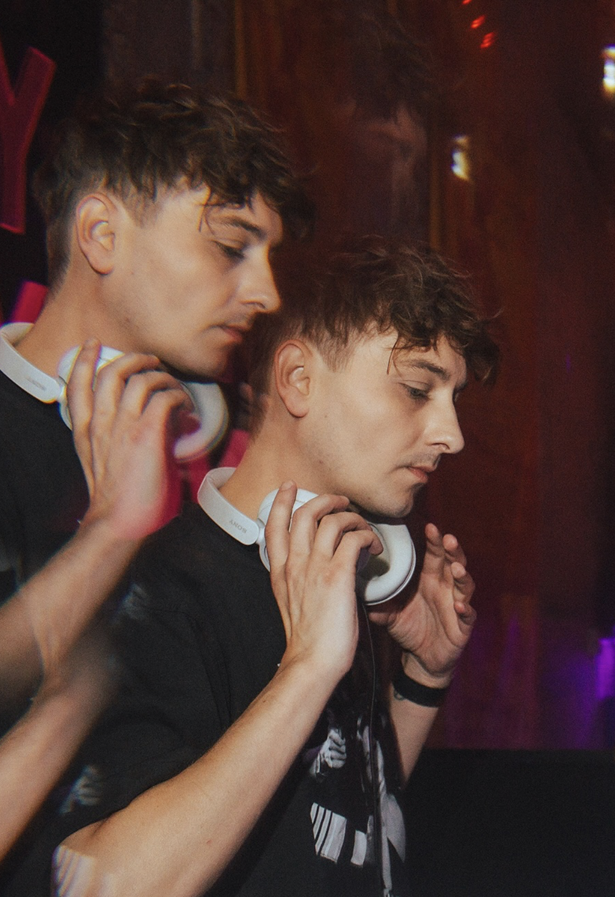

FREY.
Pop-culture enthusiast raised on Gaga, Britney and ABBA, finding religion in the queer club scene. In my sets, discover your own church through pop girls from today and yesterday.
Pop-culture enthusiast raised on Gaga, Britney and ABBA, finding religion in the queer club scene. In my sets, discover your own church through pop girls from today and yesterday.
About
I first started DJing in 2015 and played until 2017. After a hiatus, with a pandemic somewhere in the middle, I found my way back behind the decks at a friend’s Halloween party in 2022. That night reminded me how much I had missed building a set, reading a room and sharing those pop moments with a crowd.
Since then, I have become a regular at queer clubs and festivals across the Netherlands, Brussels and Singapore.

The music
My sets centre on pop-girl bops, weaving together remixes, my own edits and influences from dance, disco and house. I love moving between big shared pop moments and the niche tracks that deserve a louder audience.
Introducing a crowd to new artists is one of my favourite parts of playing, especially artists I believe deserve more recognition from queer audiences.
Listen

DJ mix

DJ mix

Live DJ set

Playlist
DJ gigs
Dates
For club nights, festivals, Pride events, radio sets and collaborations.